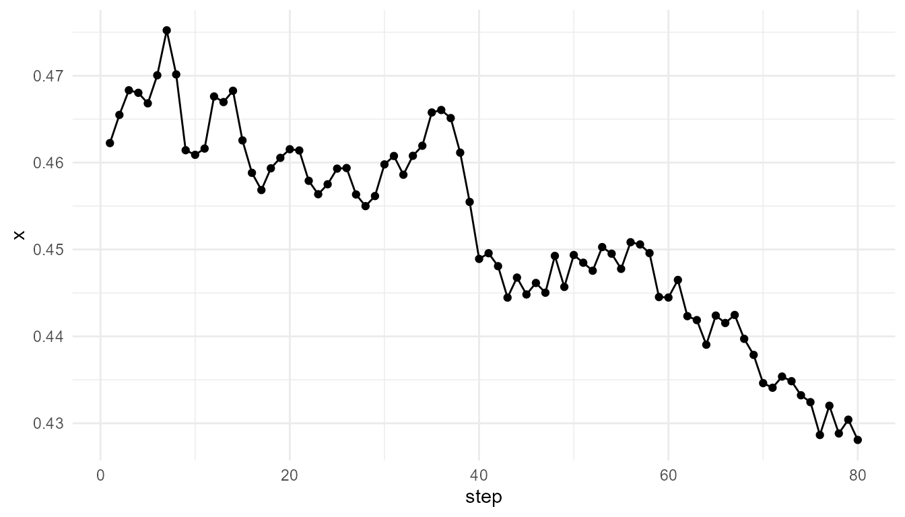
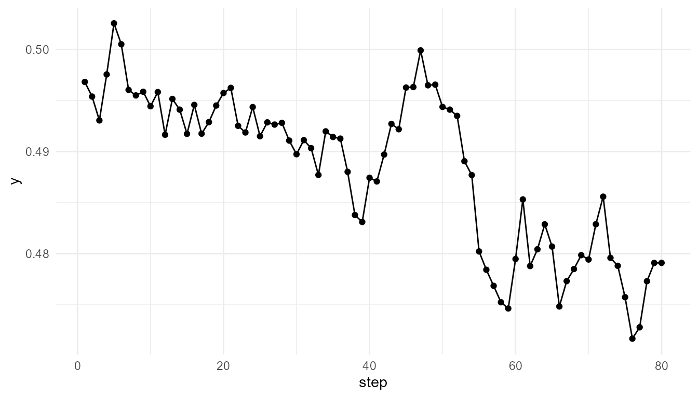
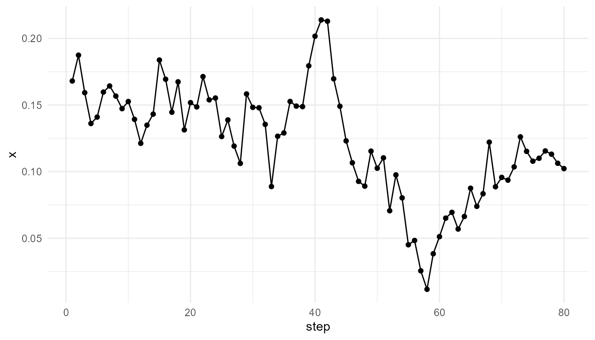
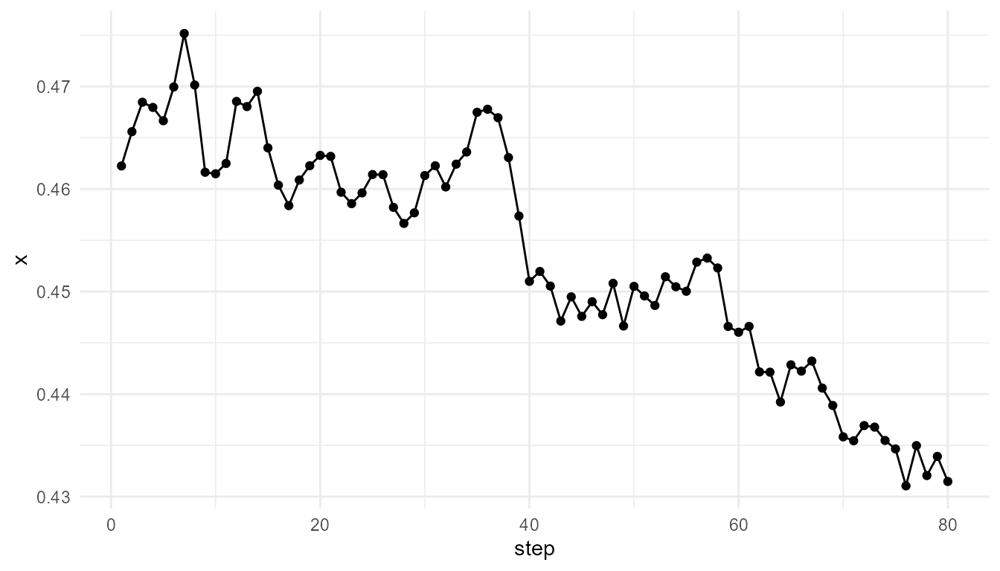
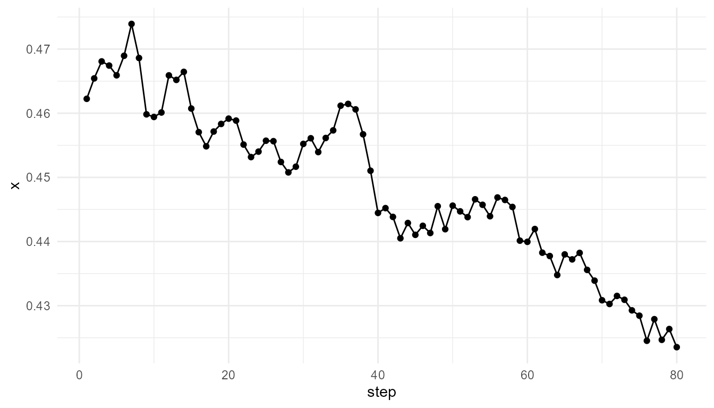
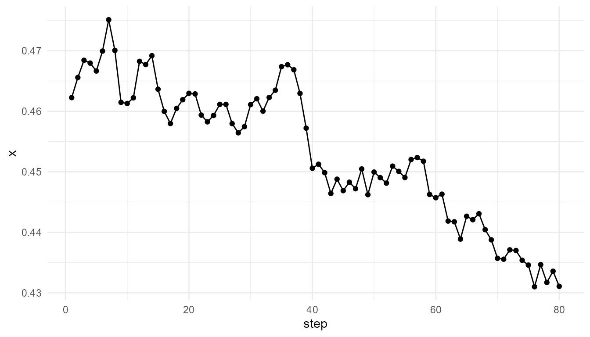
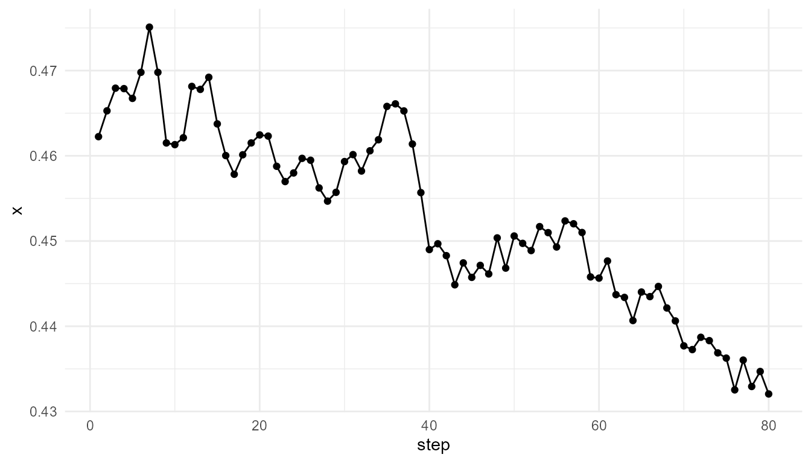
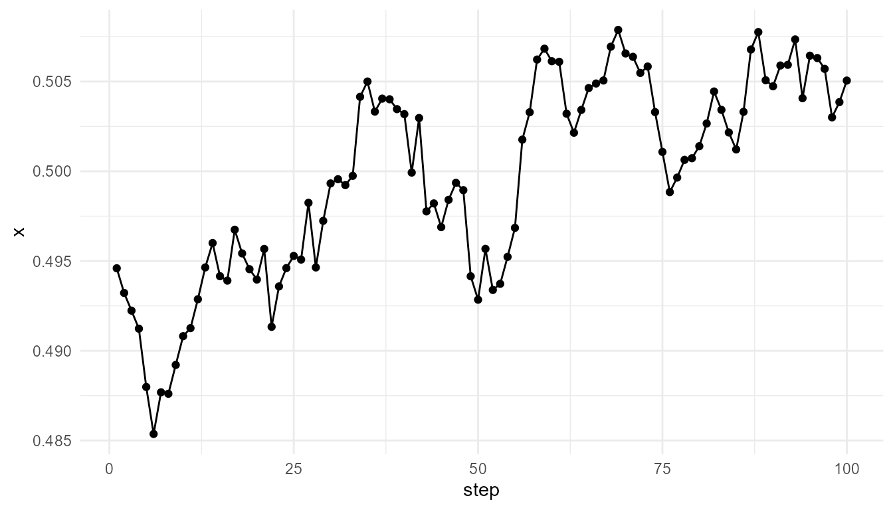

Agent Interactions Tutorial
Source:vignettes/agent-interactions-tutorial.Rmd
agent-interactions-tutorial.RmdPurpose
This tutorial introduces simulate_agent_interactions().
The function creates a simplified agent-based model showing how local
interactions among agents can produce group-level patterns.
In this tutorial, you will learn how to:
- run a basic agent interaction simulation;
- inspect the output;
- summarize group movement;
- compare interaction radius settings;
- compare alignment settings;
- use
measure_emergence()to summarize outputs; - interpret agent-based emergence responsibly.
What the function represents
An agent-based model represents a system as a collection of individual agents. Each agent follows simple rules and interacts with nearby agents or with its environment.
In simulate_agent_interactions(), agents move in a
two-dimensional space. Their movement is influenced by local interaction
and random variation.
The model is intentionally simple. It does not represent real animal behavior, social behavior, cognition, or ecological dynamics in detail. Its purpose is to illustrate one core idea:
Collective behavior can arise from repeated local interactions among individual agents.
Main arguments
| Argument | Meaning |
|---|---|
n_agents |
Number of agents in the simulation |
steps |
Number of time steps |
interaction_radius |
Distance within which agents can influence one another |
alignment |
Strength of movement alignment with nearby agents |
seed |
Random seed for reproducible results |
The two most important parameters are interaction_radius
and alignment.
interaction_radius controls how far agents can influence
each other.alignment controls how strongly agents adjust movement in
response to nearby agents.
Basic simulation
Start with a simple simulation.
agents <- simulate_agent_interactions(
n_agents = 40,
steps = 80,
interaction_radius = 0.15,
alignment = 0.05,
seed = 3
)
head(agents)
#> step agent x y
#> 1 1 A1 0.1680415 0.2814688
#> 2 1 A2 0.8075164 0.7862812
#> 3 1 A3 0.3849424 0.1730193
#> 4 1 A4 0.3277343 0.5707475
#> 5 1 A5 0.6021007 0.4192830
#> 6 1 A6 0.6043941 0.2676222Inspect the output
The output is a data frame. Each row represents one agent at one time step.
str(agents)
#> 'data.frame': 3200 obs. of 4 variables:
#> $ step : int 1 1 1 1 1 1 1 1 1 1 ...
#> $ agent: chr "A1" "A2" "A3" "A4" ...
#> $ x : num 0.168 0.808 0.385 0.328 0.602 ...
#> $ y : num 0.281 0.786 0.173 0.571 0.419 ...The main columns usually include:
| Column | Meaning |
|---|---|
step |
Time step |
agent |
Agent identifier |
x |
Horizontal position |
y |
Vertical position |
This structure allows you to examine individual movement or summarize group-level behavior.
Summarize the group center
One simple way to summarize collective movement is to calculate the average position of all agents at each time step.
Plot group movement
Plot the average x position over time.
plot_emergence_sim(
center,
x = "step",
y = "x",
type = "line"
)
Plot the average y position over time.
plot_emergence_sim(
center,
x = "step",
y = "y",
type = "line"
)
Interpretation
The group center changes over time because individual agents are moving and interacting. No single agent controls the group-level trajectory.
This illustrates the basic logic of agent-based emergence:
Group-level patterns can arise from many individual agents following local rules.
The group center is only one summary. It does not capture every detail of agent behavior, but it provides a useful starting point.
Examine one agent
You can also inspect the movement of a single agent.
one_agent <- subset(
agents,
agent == unique(agents$agent)[1]
)
head(one_agent)
#> step agent x y
#> 1 1 A1 0.1680415 0.2814688
#> 41 2 A1 0.1874116 0.2722931
#> 81 3 A1 0.1592726 0.2767441
#> 121 4 A1 0.1361010 0.2844139
#> 161 5 A1 0.1409437 0.2818173
#> 201 6 A1 0.1597038 0.2941417
plot_emergence_sim(
one_agent,
x = "step",
y = "x",
type = "line"
)
Interpretation of individual movement
A single agent’s trajectory may look different from the group-level summary. This is important because agent-based models allow you to examine both levels:
- individual behavior;
- collective pattern.
Emergence appears when the group-level pattern cannot be understood simply by looking at one agent in isolation.
Compare interaction radius
The interaction_radius parameter controls the distance
within which agents can influence one another.
A small radius means agents respond only to very close
neighbors.
A larger radius means agents can be influenced by more nearby
agents.
small_radius <- simulate_agent_interactions(
n_agents = 40,
steps = 80,
interaction_radius = 0.05,
alignment = 0.05,
seed = 3
)
large_radius <- simulate_agent_interactions(
n_agents = 40,
steps = 80,
interaction_radius = 0.30,
alignment = 0.05,
seed = 3
)Summarize radius comparison
rbind(
small_radius = measure_emergence(
small_radius,
value_col = "x",
time_col = "step"
),
large_radius = measure_emergence(
large_radius,
value_col = "x",
time_col = "step"
)
)
#> n unique_states shannon_entropy mean_value sd_value
#> small_radius 3200 3160 11.58567 0.4534502 0.2619113
#> large_radius 3200 3200 11.64386 0.4485507 0.1607586
#> temporal_variability mean_absolute_change
#> small_radius 0.01139415 0.002271893
#> large_radius 0.01253964 0.002309593Plot radius comparison using group centers
small_center <- aggregate(
cbind(x, y) ~ step,
data = small_radius,
FUN = mean
)
large_center <- aggregate(
cbind(x, y) ~ step,
data = large_radius,
FUN = mean
)
head(small_center)
#> step x y
#> 1 1 0.4622470 0.4968189
#> 2 2 0.4655900 0.4954483
#> 3 3 0.4684588 0.4933867
#> 4 4 0.4679535 0.4979719
#> 5 5 0.4666542 0.5028595
#> 6 6 0.4699501 0.5008574
head(large_center)
#> step x y
#> 1 1 0.4622470 0.4968189
#> 2 2 0.4654295 0.4957186
#> 3 3 0.4680780 0.4933566
#> 4 4 0.4674288 0.4980353
#> 5 5 0.4659111 0.5032384
#> 6 6 0.4689537 0.5015246
plot_emergence_sim(
small_center,
x = "step",
y = "x",
type = "line"
)
plot_emergence_sim(
large_center,
x = "step",
y = "x",
type = "line"
)
Interpretation of interaction radius
Interaction radius changes the scale of local influence. When the radius is small, agents interact with fewer neighbors. When the radius is larger, agents can be influenced by a broader local neighborhood.
This illustrates an important principle:
The scale of local interaction can shape the scale of collective behavior.
The metrics help summarize the difference, but the plots are also important.
Compare alignment settings
The alignment parameter controls how strongly agents
adjust movement based on nearby agents.
A low alignment setting means agents remain more independent.
A higher alignment setting means nearby agents influence one another
more strongly.
weak_alignment <- simulate_agent_interactions(
n_agents = 40,
steps = 80,
interaction_radius = 0.15,
alignment = 0.01,
seed = 3
)
strong_alignment <- simulate_agent_interactions(
n_agents = 40,
steps = 80,
interaction_radius = 0.15,
alignment = 0.15,
seed = 3
)Summarize alignment comparison
rbind(
weak_alignment = measure_emergence(
weak_alignment,
value_col = "x",
time_col = "step"
),
strong_alignment = measure_emergence(
strong_alignment,
value_col = "x",
time_col = "step"
)
)
#> n unique_states shannon_entropy mean_value sd_value
#> weak_alignment 3200 3169 11.60181 0.4531485 0.2600777
#> strong_alignment 3200 3199 11.64323 0.4530487 0.2274567
#> temporal_variability mean_absolute_change
#> weak_alignment 0.01142722 0.002273111
#> strong_alignment 0.01069154 0.002274397Plot alignment comparison using group centers
weak_center <- aggregate(
cbind(x, y) ~ step,
data = weak_alignment,
FUN = mean
)
strong_center <- aggregate(
cbind(x, y) ~ step,
data = strong_alignment,
FUN = mean
)
head(weak_center)
#> step x y
#> 1 1 0.4622470 0.4968189
#> 2 2 0.4655754 0.4954598
#> 3 3 0.4684177 0.4933503
#> 4 4 0.4679551 0.4979165
#> 5 5 0.4666512 0.5027972
#> 6 6 0.4699421 0.5007755
head(strong_center)
#> step x y
#> 1 1 0.4622470 0.4968189
#> 2 2 0.4652774 0.4951969
#> 3 3 0.4679357 0.4924120
#> 4 4 0.4678824 0.4965541
#> 5 5 0.4667372 0.5017519
#> 6 6 0.4697937 0.4994990
plot_emergence_sim(
weak_center,
x = "step",
y = "x",
type = "line"
)
plot_emergence_sim(
strong_center,
x = "step",
y = "x",
type = "line"
)
Interpretation of alignment
Alignment affects how strongly agents coordinate with nearby agents. Stronger alignment may produce more coordinated group movement, depending on the other parameters.
However, stronger alignment does not automatically mean “more emergence.” It only means the local interaction rule has changed. The result must be interpreted using both the plots and the metrics.
Compare all runs
It can be useful to summarize all runs in one table.
summary_table <- rbind(
baseline = measure_emergence(
agents,
value_col = "x",
time_col = "step"
),
small_radius = measure_emergence(
small_radius,
value_col = "x",
time_col = "step"
),
large_radius = measure_emergence(
large_radius,
value_col = "x",
time_col = "step"
),
weak_alignment = measure_emergence(
weak_alignment,
value_col = "x",
time_col = "step"
),
strong_alignment = measure_emergence(
strong_alignment,
value_col = "x",
time_col = "step"
)
)
summary_table
#> n unique_states shannon_entropy mean_value sd_value
#> baseline 3200 3196 11.64073 0.4519456 0.2482445
#> small_radius 3200 3160 11.58567 0.4534502 0.2619113
#> large_radius 3200 3200 11.64386 0.4485507 0.1607586
#> weak_alignment 3200 3169 11.60181 0.4531485 0.2600777
#> strong_alignment 3200 3199 11.64323 0.4530487 0.2274567
#> temporal_variability mean_absolute_change
#> baseline 0.01175780 0.002304347
#> small_radius 0.01139415 0.002271893
#> large_radius 0.01253964 0.002309593
#> weak_alignment 0.01142722 0.002273111
#> strong_alignment 0.01069154 0.002274397Interpretation of metrics
The metrics summarize variation and change in the selected variable,
here the x position.
This is useful, but it is incomplete. Agent-based behavior may also involve:
- changes in
yposition; - distance among agents;
- clustering;
- group spread;
- alignment of movement;
- individual variation;
- collective direction.
Therefore, metrics should be interpreted as summaries, not complete explanations.
Suggested exercises
Try modifying the model settings.
experiment <- simulate_agent_interactions(
n_agents = 80,
steps = 100,
interaction_radius = 0.20,
alignment = 0.10,
seed = 12
)
experiment_center <- aggregate(
cbind(x, y) ~ step,
data = experiment,
FUN = mean
)
plot_emergence_sim(
experiment_center,
x = "step",
y = "x",
type = "line"
)
Questions to consider:
- What happens when
n_agentsincreases? - What happens when
interaction_radiusis very small? - What happens when
interaction_radiusis large? - What happens when
alignmentis close to zero? - What happens when
alignmentis stronger? - Do the metrics match what you see in the plots?
- What does the group center miss?
Responsible interpretation
This model is a simplified educational model of agent interaction. It should not be interpreted as a full model of real organisms, social systems, cognition, or collective intelligence.
It is better to say:
The simulation illustrates how local interactions can produce group-level patterns.
than:
The simulation fully explains animal movement or social behavior.
It is better to say:
The model shows how interaction radius and alignment affect simulated group movement.
than:
The model proves how real collective behavior works.
Key takeaway
simulate_agent_interactions() helps users explore how
individual agents following local rules can produce group-level
dynamics.
The most important lesson is that no central controller is required. Collective patterns can arise through repeated local interactions, movement, alignment, and randomness.